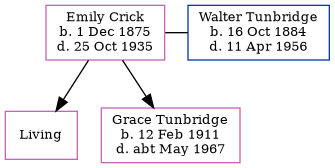

Emily Florence Elizabeth Tunbridge (née Crick) 1875 - 1935
[ Home ] | [ Calendar ] | [ Surnames Index ] | [ Errors ] | [ Family History ]Emily Crick, the wife of Walter Tunbridge (the first cousin twice-removed on the father's side of Nigel Horne), was born in Dover, Kent, England on 1 Dec 18751,2,3,4,5,6, was baptised there at St Mary The Virgin on 2 Apr 1876 and married Walter (a van driver grocers with whom she had 2 children: Florence Elizabeth and Grace Clara, along with 1 surviving child) at Christ Church, Hougham, Kent, England on 27 Aug 19072.
During her life, she was living at Noahs Ark Road in Dover on 2 Apr 19111; at Granby Road, London, Kent in 19218; and at 70 Granby Road, Eltham, London, England on 19 Jun 19219.
She died on 25 Oct 1935 in Woolwich, London, England4 and was buried in Greenwich, London, England on 30 Oct 19357.
Children
- Grace Clara was born on 12 Feb 1911
Citations
- 1911 Census for England & Wales - Findmypast (was age 35 and the wife of the head of the household)
- 1911 England Census Online publication - Provo, UT, USA: Ancestry.com Operations, Inc., 2011.Original data - Census Returns of England and Wales, 1911. Kew, Surrey, England: The National Archives of the UK (TNA), 1911. Data imaged from the National Archives, London, England.
- England & Wales births 1837-2006 - Findmypast
- England & Wales deaths 1837-2007 - Findmypast
- Kent Baptisms - Findmypast
- Kent Marriages And Banns - Findmypast
- https://www.deceasedonline.com/servlet/GSDOSearch?DetsView=Summary&src=ext&fileid=3611211
- 1921 Census Of England & Wales - Findmypast
- 1921 Census Of England & Wales - Findmypast (was age 45 and the wife of the head of the household)
Media
26 Aug 1932 - Dover Express - Silver Wedding Notice

Kent marriages and banns - GBPRS/CANT/M/97058686/2
England Births & Baptisms 1538-1975 - R_884198937
Kent Baptisms - GBPRS/CANT/B/96090467
England & Wales births 1837-2006 - BMD/B/1876/1/AZ/000134/240
England & Wales marriages 1837-2005 - BMD/M/1907/3/AZ/000095/122
England & Wales deaths 1837-2007 - BMD/D/1935/4/AZ/000972/135
Family Tree
Map
Generated by ged2site. Last updated on Jul 3, 2024
Known Issues
Baptism information not used to determine a parent
No records of living with anyone